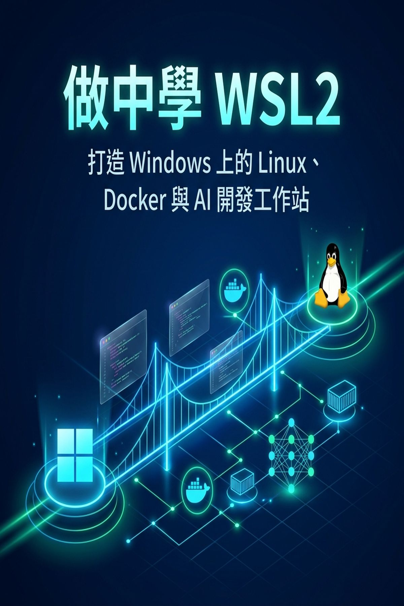

電子書
做中學 WSL2：打造 Windows 上的 Linux、Docker 與 AI 開發工作站
不必放棄 Windows，就能擁有極致流暢的 Linux + Docker + AI 實戰開發工作區！ 本書以「做中學（Learn by Doing）」為核心，拋棄繁瑣枯燥的純理論，專為想在 Wind

做中學 WSL2：打造 Windows 上的 Linux、Docker 與 AI 開發工作站
不必放棄 Windows，就能擁有極致流暢的 Linux + Docker + AI 實戰開發工作區！ 本書以「做中學（Learn by Doing）」為核心，拋棄繁瑣枯燥的純理論，專為想在 Wind
不必放棄 Windows，就能擁有極致流暢的 Linux + Docker + AI 實戰開發工作區！ 本書以「做中學（Learn by Doing）」為核心，拋棄繁瑣枯燥的純理論，專為想在 Windows 11 上建置現代化開發環境的工程師與初學者設計。全書包含 19 個精簡高效的實戰單元，搭配自動化驗收腳本與明確的排錯步驟，帶你從零打通 Windows 與 Linux 的跨系統整合！